| 8:00 pm | 8:30 pm | 9:00 pm | 9:30 pm | 10:00 pm | 10:30 pm | 11:00 pm | 11:30 pm | 12:00 am | 12:30 am | 1:00 am | 1:30 am | 2:00 am | |
|---|---|---|---|---|---|---|---|---|---|---|---|---|---|
| BET Awards | BET UNCUT | Martin | Martin | Martin | Martin | ||||||||
| Spongebob Squarepants | Loud House | Fairly Oddparents | Kid's Choice Awards | George Lopez | The Cosby Show | The Cosby Show | The Cosby Show | The Fresh Prince of Bel-Air | The Fresh Prince of Bel-Air | The Fresh Prince of Bel-Air | The Fresh Prince of Bel-Air | ||
| NBA Playoffs | NBA Playoffs | ||||||||||||
| 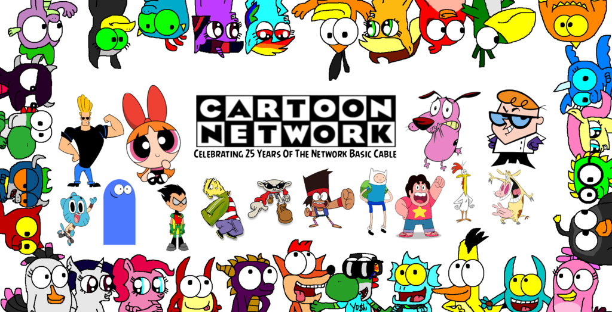 | Courage The Cowardly Dog | Chowder | Johnny Bravo | Dexter Laboratory | Cow & Chicken | Robot Chicken | Aqua Teen Hunger Force | Family Guy | Family Guy | Cloudy with a Chance of Meatballs | |||
| Ridiculousness | Ridiculousness | Jersey Shore | Jersey Shore | Jersey Shore | Jersey Shore | Wild 'N Out | Wild 'N Out | Wild 'N Out | Wild 'N Out | Scream | |||
 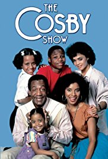
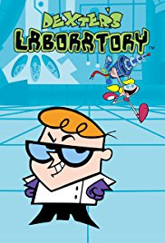
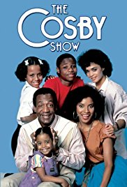
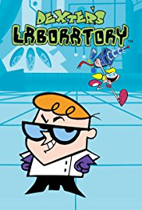

 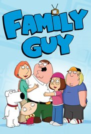
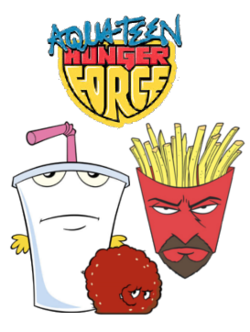
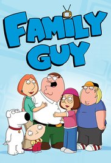
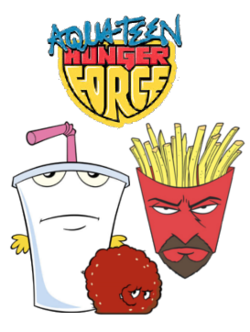

 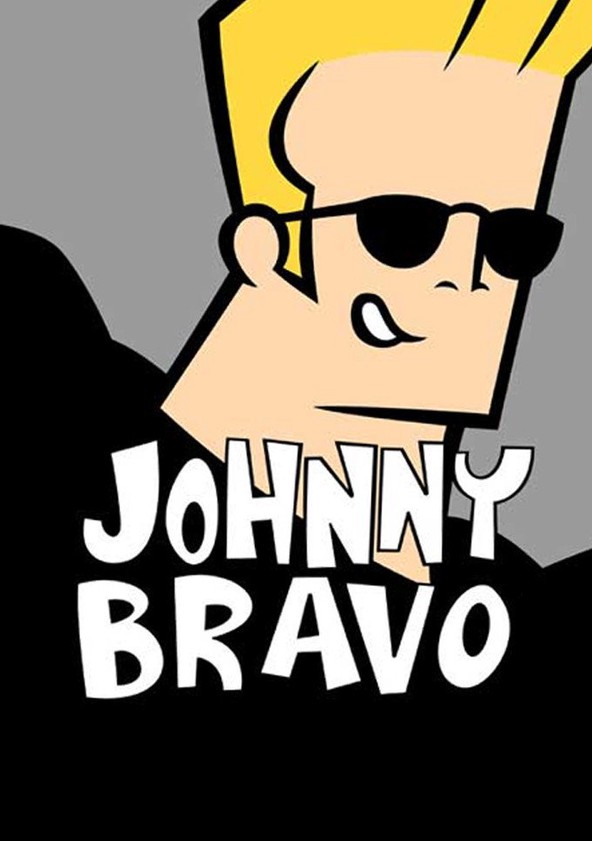
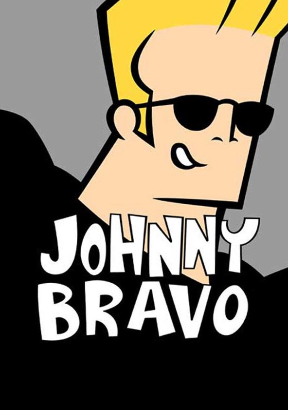

 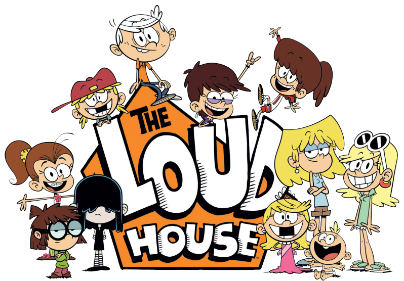
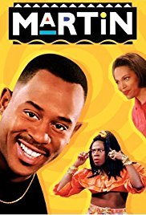
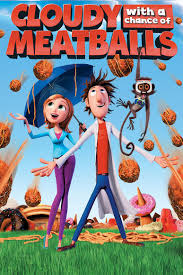
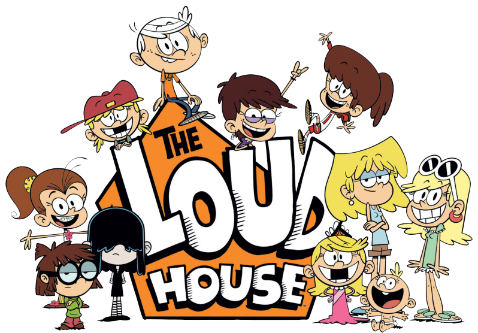
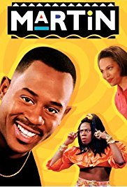
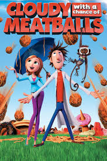

 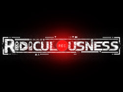
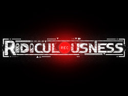